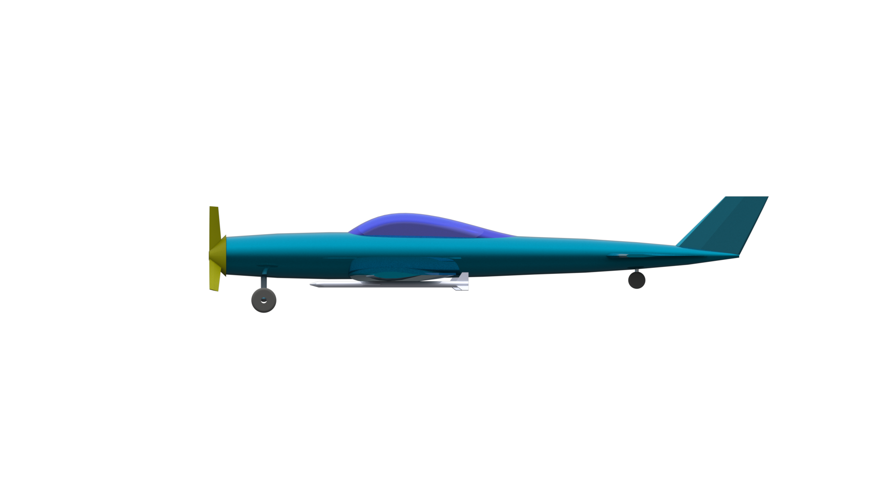
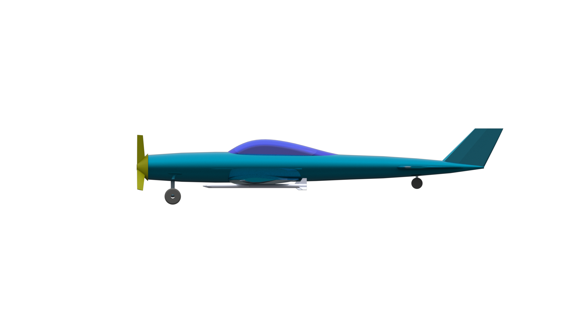

Summary
Over the period of the Fall 2022 semester I took attended an Aircraft Performance & Design Course (ME408). During this course, we had the opportunity of working as groups to create a plane based on required specifications set forth by the customer (in this case - our professor).
Our team chose the aerobatic sports plane as our project. And through that we had a variety of customer specifications to meet - these can be seen in the Table below.
| Parameter | Threshold | Objective |
|---|---|---|
Mission Performance |
--- | --- |
| Max Cruise Speed | 120 kts | 180 kts |
| Design Radius | 100 nm | 200 nm |
| Design Endurance | 30 min | 60 min |
| Max Sustained Turns | 10 | 20 |
| Service Ceiling | 10,000 ft | 15,000 ft |
Takeoff & Landing Performance |
--- | --- |
| Stall Speed | 45 kts | - |
| Takeoff Field Length | 800 ft | 1,500 ft |
| Landing Field Length | 800 ft | 1,500 ft |
| Rate of Climb | 300 ft/min | - |
Maneuver Performance |
--- | --- |
| Max Sustained Turn Rate | 20 deg/s | 30 deg/s |
| Max Instantaneous Turn Rate | 20 deg/s | 30 deg/s |
Accommodation |
--- | --- |
| Non-Expandable Payload, Seats | 1 | 2 |
| Passenger Allowance | 200 lbs/pax | 250 lbs/pax |
| Expendable Payload (AIM-9 Wing Tip Missles) | 2 missiles | 4 missiles |
At the start of our design process, our team initially decided to pursue a dual certification for both LSA and Aerobatic aircraft. However, as we went through the design process - we realised that due to the tight requirements of the LSA certificate - we would not be able to achieve both certifcates together. Hence, since the primary certification that we were aiming to achieve was the aerosport certification - we instead opted to pursue an Aerobatic and Military dual cert. Whilst this did alter some of the requirements of the aircraft (max cruise speed, armament payload, etc.) we felt that it was a better alternative. Especially, as there are few military and aerobatic dual certs currently in the market.
 
